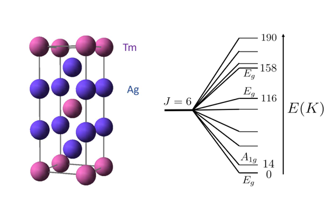
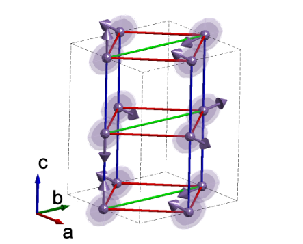
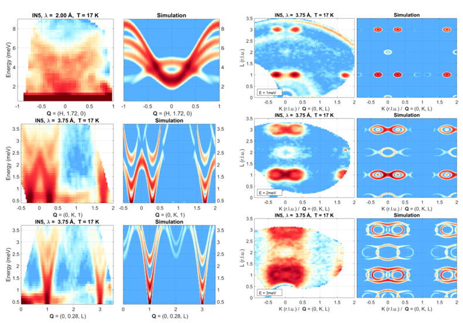

8月：注目論文と傾向のまとめ
先月報告されたLK-99(Pb10-xCux(PO4)6O)に関する常温常圧超伝導体に関する再試論文が多いが、とうとうScience誌やNature誌からLK-99 isn’t a superconductorという判断が下されたようだ。中国やアメリカから多くの再試実験が報告される一方で日本勢からは1本も論文が出ないのは、日本におけるアカデミアの余裕のなさが垣間見えるのか、ただ興味が薄いのか、それとも予め超伝導でないと見切りをつけていたのか。その他、個人的に気になる論文をピックアップして紹介しています。
論文タイトル一覧
- 室温常圧で超伝導を示す銅ドープ鉛アパタイト構造の合成と機構
- 多元素合金の機械的性質予測のための原始的な機械学習ツール
- 弾性カロリック効果によるフェロ四極子金属TmAg2のネマティック感受性の測定
- 単層CrSBrにおける電場誘起ハーフメタル
- キラル磁気ソリトンの発見と制御：ランダウ・リフシッツ・ギルバート方程式の厳密解
- 高圧下でのNd2CoFeO6二重ペロブスカイトの構造相転移と磁気弾性結合
- 多発性TbMnO3のスピン波分散とマグノンキラリティ
- 室温付近での磁気冷却効果の基礎と応用：RMn6Sn6系列の磁気構造と高エントロピー合金化の影響
- 分子動力学シミュレーションにおけるエネルギー保存の問題と機械学習ポテンシャルの役割
- パインズの悪魔の発見：Sr2RuO4における3次元音響プラズモンの観測
1. 室温常圧で超伝導を示す銅ドープ鉛アパタイト構造の合成と機構
・固相法を用いて、鉛アパタイト(Pb10(PO4)6O)に銅を部分的に置換したLK-99®という物質を合成した。この物質は、室温常圧で電気抵抗がゼロになる超伝導体であることを示した。
・LK-99®の結晶構造は、X線回折(XRD)により修飾鉛アパタイト(MLA)構造であることが分かった。銅のドープにより、結晶格子の体積収縮が起こり、絶縁体から金属への相転移(IMT)が引き起こされた。
・LK-99®の超伝導性は、温度や磁場に依存する磁化率やI-V特性を測定することで確認した。特に、室温常圧で物質が磁石の上で部分的に浮上するメイスナー効果を観察した。
・LK-99®の超伝導機構は、1次元的なCu2+−O1/2−Cu2+チェーンにおける電荷密度波(CDW)とオンサイトクーロン反発エネルギー(Uc)によるバイポーラロン形成とトンネル効果に基づくと考えられる。これは、BR-BCS理論により説明できる。
・LK-99®の結晶構造は、X線回折(XRD)により修飾鉛アパタイト(MLA)構造であることが分かった。銅のドープにより、結晶格子の体積収縮が起こり、絶縁体から金属への相転移(IMT)が引き起こされた。
・LK-99®の超伝導性は、温度や磁場に依存する磁化率やI-V特性を測定することで確認した。特に、室温常圧で物質が磁石の上で部分的に浮上するメイスナー効果を観察した。
・LK-99®の超伝導機構は、1次元的なCu2+−O1/2−Cu2+チェーンにおける電荷密度波(CDW)とオンサイトクーロン反発エネルギー(Uc)によるバイポーラロン形成とトンネル効果に基づくと考えられる。これは、BR-BCS理論により説明できる。
コメント：LK-99が常温常圧超伝導じゃないのは残念だけど、盛り上がり自体は好き。次に期待。
関連記事：サイエンス誌が最初に取り上げた記事（27 Jul 2023）：Breaking Superconductor News,
サイエンス誌が2度目に取り上げた記事（1 Aug 2023）：A Room-Temperature Superconductor? New Developments,
Nature誌が最初に取り上げた記事（4 Aug 2023）：LK-99 isn’t a superconductor — how science sleuths solved the mystery,
超伝導でないと決定づけたAlex Kaplan（誰？）のツイート（8 Aug 2023）,
サイエンス誌が3度目に取り上げた記事（8 Aug 2023）：The short, spectacular life of that viral room-temperature superconductivity claim,
最近Nature誌で報告された超伝導でないとする記事（16 Aug 2023）：Claimed superconductor LK-99 is an online sensation — but replication efforts fall short.
DATE: 11 Aug 2023 (v3), 26 Jul 2023 (v1)
Superconductor Pb10−xCux(PO4)6O showing levitation at room temperature and atmospheric pressure and mechanism
Sukbae Lee et al. (Quantum Energy Research Centre, South Korea)
arXiv:2307.12037 (cond-mat.supr-con)
Superconductor Pb10−xCux(PO4)6O showing levitation at room temperature and atmospheric pressure and mechanism
Sukbae Lee et al. (Quantum Energy Research Centre, South Korea)
arXiv:2307.12037 (cond-mat.supr-con)


2. 多元素合金の機械的性質予測のための原始的な機械学習ツール
・多元素合金（MPEA）の組成と6つの機械的性質（硬さ、降伏強度、引張強度、伸び、圧縮強度、塑性）を含むデータセットを作成した。
・MPEAの組成を機械学習モデルの入力ベクトルに変換するために、パーサーというツールを開発した。
・線形回帰、K近傍回帰、サポートベクター回帰、ランダムフォレスト回帰などのさまざまな機械学習モデルを適用して、MPEAの機械的性質を予測した。
・Gradioというライブラリを使って、機械学習モデルの予測結果を視覚化し、ユーザーと対話できるインターフェースを作成した。


・MPEAの組成を機械学習モデルの入力ベクトルに変換するために、パーサーというツールを開発した。
・線形回帰、K近傍回帰、サポートベクター回帰、ランダムフォレスト回帰などのさまざまな機械学習モデルを適用して、MPEAの機械的性質を予測した。
・Gradioというライブラリを使って、機械学習モデルの予測結果を視覚化し、ユーザーと対話できるインターフェースを作成した。
コメント：マテインフォ系のGUIの優れたソフトが最近色々な特性解析に拡張しているような気がする。
DATE: 15 Aug 2023
A primitive machine learning tool for the mechanical property prediction of multiple principal element alloys
R. Tan et al. (The Australian National University, Australia)
arXiv:2308.07649 (cond-mat)
A primitive machine learning tool for the mechanical property prediction of multiple principal element alloys
R. Tan et al. (The Australian National University, Australia)
arXiv:2308.07649 (cond-mat)
3. 弾性カロリック効果によるフェロ四極子金属TmAg2のネマティック感受性の測定
・TmAg2は、4f電子がフェロ四極子秩序を形成し、4回対称性を破る電子ネマティック相転移を5Kで起こす金属物質である。
・c軸に沿った磁場は、フェロ四極子秩序パラメータに対する有効な横場として機能し、相転移温度を3.2Tで完全に抑制する。
・弾性カロリック効果は、物質が経験するひずみによって誘起される温度変化を測定する技術であり、フェロ四極子-ひずみ感受性を直接探ることができる。
・弾性カロリック効果から得られたネマティック感受性は、弾性定数の測定と一致し、横場イジング模型によって定量的に説明される。
・c軸に沿った磁場は、フェロ四極子秩序パラメータに対する有効な横場として機能し、相転移温度を3.2Tで完全に抑制する。
・弾性カロリック効果は、物質が経験するひずみによって誘起される温度変化を測定する技術であり、フェロ四極子-ひずみ感受性を直接探ることができる。
・弾性カロリック効果から得られたネマティック感受性は、弾性定数の測定と一致し、横場イジング模型によって定量的に説明される。
コメント：弾性カロリック効果とフェロ四極子とc軸磁場の関係は興味深い
DATE: 10 Aug 2023
The nematic susceptibility of the ferroquadrupolar metal TmAg2 measured via the elastocaloric effect
Elliott W et al. (Stanford University, USA)
arXiv:2308.05312 (cond-mat)
The nematic susceptibility of the ferroquadrupolar metal TmAg2 measured via the elastocaloric effect
Elliott W et al. (Stanford University, USA)
arXiv:2308.05312 (cond-mat)


4. 単層CrSBrにおける電場誘起ハーフメタル
・2層の磁性原子を持つ2次元（2D）強磁性（FM）材料に垂直電場をかけることで、ハーフメタル性（一方のスピンチャネルが金属で、もう一方が絶縁体または半導体である性質）を実現する新しいメカニズムを提案した。電場により、異なる層の電子バンドがずれることで、ハーフメタル性が誘起される。
・単層CrSBrは正方晶系の結晶構造を持ち、SとBr原子によって形成された歪んだ八面体配位にある2層のCr原子が磁性を持つ。第一原理計算により、CrSBrは電場なしではFM半導体であるが、適切な範囲の電場をかけるとFMハーフメタルになることを見出した。
・ハーフメタル性を誘起するために必要な電場強度は約0.4 V/Å程度であり、実験的に達成可能な値であることを示した。また、ハーフメタル性を定義するギャップは0.33 eV以上であり、スピン反転励起のエネルギーが十分に高いことを確認した。
・CrSBr単層を用いて、電場のオンオフによってデータ書き込みと読み出しを行う可能なスピントロニクスデバイスの概念図を示した。また、同じ構造とFM配位を持つ他の単層材料（VSF, VSeF, VSeBr, CrSCl, CrSI, CrSeBr, CrSeI）にも本研究の方法や分析が適用可能であることを指摘した。
・単層CrSBrは正方晶系の結晶構造を持ち、SとBr原子によって形成された歪んだ八面体配位にある2層のCr原子が磁性を持つ。第一原理計算により、CrSBrは電場なしではFM半導体であるが、適切な範囲の電場をかけるとFMハーフメタルになることを見出した。
・ハーフメタル性を誘起するために必要な電場強度は約0.4 V/Å程度であり、実験的に達成可能な値であることを示した。また、ハーフメタル性を定義するギャップは0.33 eV以上であり、スピン反転励起のエネルギーが十分に高いことを確認した。
・CrSBr単層を用いて、電場のオンオフによってデータ書き込みと読み出しを行う可能なスピントロニクスデバイスの概念図を示した。また、同じ構造とFM配位を持つ他の単層材料（VSF, VSeF, VSeBr, CrSCl, CrSI, CrSeBr, CrSeI）にも本研究の方法や分析が適用可能であることを指摘した。
コメント：ハーフメタル性を定義するギャップの閾値は0.33eVだったのか。これを電場誘起で発現させるのは興味深い。
DATE: 7 Aug 2023
Electric-field induced half-metal in monolayer CrSBr
Hao-Tian Guo et al. (Xi’an University of Posts and Telecommunications, China)
arXiv:2308.03430 (cond-mat)
Electric-field induced half-metal in monolayer CrSBr
Hao-Tian Guo et al. (Xi’an University of Posts and Telecommunications, China)
arXiv:2308.03430 (cond-mat)


5. キラル磁気ソリトンの発見と制御：ランダウ・リフシッツ・ギルバート方程式の厳密解
・ランダウ・リフシッツ・ギルバート方程式（LLG方程式）と一般化非線形シュレーディンガー方程式（GNLS方程式）との間に幾何学的な対応関係を見出し、LLG方程式を厳密に解くことができることを示した。
・ダルブー変換を用いて、等方性強磁性ナノワイヤー中に存在するキラル磁気ソリトンという新しい磁化構造の解析的な形式を導出した。キラル磁気ソリトンは、空間的に局在する孤立した波の一種で、鏡像対称性と位相ジャンプを持ち、左巻き、右巻き、中立の三種類に分類できる。スピンが360°回転する構造を持つ磁化構造を有する。
・スピン偏極電流の注入によって、キラル磁気ソリトンの運動を任意に操作できることを理論的にも数値的にも確認した。電流の強度や方向に応じて、ソリトンの速度や進行方向を変えたり、停止させたりできる。
・ギルバート減衰の影響を考慮すると、キラル磁気ソリトンは伝播中にエネルギーを失って均一な磁化状態に崩壊することを示した。しかし、適切なスピン電流を加えることで、非断熱的なスピントルクが減衰効果に対抗して、ソリトンの長距離伝播を可能にすることができる。
・ダルブー変換を用いて、等方性強磁性ナノワイヤー中に存在するキラル磁気ソリトンという新しい磁化構造の解析的な形式を導出した。キラル磁気ソリトンは、空間的に局在する孤立した波の一種で、鏡像対称性と位相ジャンプを持ち、左巻き、右巻き、中立の三種類に分類できる。スピンが360°回転する構造を持つ磁化構造を有する。
・スピン偏極電流の注入によって、キラル磁気ソリトンの運動を任意に操作できることを理論的にも数値的にも確認した。電流の強度や方向に応じて、ソリトンの速度や進行方向を変えたり、停止させたりできる。
・ギルバート減衰の影響を考慮すると、キラル磁気ソリトンは伝播中にエネルギーを失って均一な磁化状態に崩壊することを示した。しかし、適切なスピン電流を加えることで、非断熱的なスピントルクが減衰効果に対抗して、ソリトンの長距離伝播を可能にすることができる。
コメント：この研究では、交換場だけを考慮してキラル磁気ソリトンを解析しているようだが、他の有効場や異方性、不均一性などの要素が加わった場合にどうなるのか興味あり。
DATE: 16 Aug 2023
Discovery and regulation of chiral magnetic solitons: Exact solution from Landau-Lifshitz-Gilbert equation
Xin-Wei Jin et al. (Northwest University, China)
arXiv:2308.08331 (cond-mat)
Discovery and regulation of chiral magnetic solitons: Exact solution from Landau-Lifshitz-Gilbert equation
Xin-Wei Jin et al. (Northwest University, China)
arXiv:2308.08331 (cond-mat)


6. 高圧下でのNd2CoFeO6二重ペロブスカイトの構造相転移と磁気弾性結合
・高圧XRD測定：Nd2CoFeO6 (NCFO)は、高圧下で正方晶から単斜晶への構造相転移を約13.8 GPaで起こすことがXRD測定によって明らかになった。相転移は、(Fe/Co)O6八面体の歪みが圧力によって増加し、格子ひずみを緩和するために起こる。また、約1.1 GPaで体積圧縮率と体積弾性率に異常が見られたが、これは電子的な異常によるものと考えられる。
・低温ラマン分析：NCFOのラマンスペクトルは、温度が低下すると青方偏移するが、約47 Kで急激に赤方偏移することが低温ラマン分析によって示された。この赤方偏移は、スピン再配向転移に関連していると考えられる。また、約240 Kでラマンモード周波数に突然の飛びが見られたが、これは反強磁性転移温度TNと一致する。
・高圧ラマン分析：高圧下でのラマンスペクトルは、約27.4 GPaまで大きな変化は見られなかった。しかし、AgとBgモードのピーク位置は、約1 GPaと約13.1 GPaで傾きの変化を示した。13.1 GPa以上では、正方晶から単斜晶への構造相転移に関連して傾きが減少した。1 GPa以下では、圧力に対する傾きが半分以下に減少したが、これは新しいスピン配列によるものと推測される。
・磁場下での高圧ラマン分析：外部磁場を印加すると、Bgモードは圧力に伴って硬化した。この硬化は、スピンと磁場との強い相互作用によってスピンフォノン相互作用が影響を受けるためだと考えられる。また、磁場を切った後もラマンスペクトルは元の振る舞いに戻らなかった。この現象は詳細な理論的研究が必要である。
・低温ラマン分析：NCFOのラマンスペクトルは、温度が低下すると青方偏移するが、約47 Kで急激に赤方偏移することが低温ラマン分析によって示された。この赤方偏移は、スピン再配向転移に関連していると考えられる。また、約240 Kでラマンモード周波数に突然の飛びが見られたが、これは反強磁性転移温度TNと一致する。
・高圧ラマン分析：高圧下でのラマンスペクトルは、約27.4 GPaまで大きな変化は見られなかった。しかし、AgとBgモードのピーク位置は、約1 GPaと約13.1 GPaで傾きの変化を示した。13.1 GPa以上では、正方晶から単斜晶への構造相転移に関連して傾きが減少した。1 GPa以下では、圧力に対する傾きが半分以下に減少したが、これは新しいスピン配列によるものと推測される。
・磁場下での高圧ラマン分析：外部磁場を印加すると、Bgモードは圧力に伴って硬化した。この硬化は、スピンと磁場との強い相互作用によってスピンフォノン相互作用が影響を受けるためだと考えられる。また、磁場を切った後もラマンスペクトルは元の振る舞いに戻らなかった。この現象は詳細な理論的研究が必要である。
コメント：電子的な相転移や構造的な相転移を評価するのに歪み印加は有効のようだ。
DATE: 18 Aug 2023
Pressure-induced softening in bulk modulus due to magneto-elastic coupling in Nd2CoFeO6 double Perovskite
Bidisha Mukherjee et al. (Indian Institute of Science Education and Research Kolkata, India)
arXiv:2308.09651 (cond-mat)
Pressure-induced softening in bulk modulus due to magneto-elastic coupling in Nd2CoFeO6 double Perovskite
Bidisha Mukherjee et al. (Indian Institute of Science Education and Research Kolkata, India)
arXiv:2308.09651 (cond-mat)


7. 多発性TbMnO3のスピン波分散とマグノンキラリティ
・多発性TbMnO3は、複雑な磁気構造によって電気分極を直接誘起するタイプII多発性物質の代表例である。
・中性子散乱実験と線形スピン波理論を用いて、多発性相でのマグノン分散と強度分布を詳細に調べた。
・楕円形スピンサイクロイドと単一イオン異方性を考慮したモデルが、実験データとよく一致し、交換相互作用やダイナミックキラリティのパラメーターを決定した。
・電場効果やTbモーメントの秩序化（Tb3+の4f電子がMn3+の3d電子と結合）が、マグノン分散やキラリティに影響を与えることを示し、多発性結合機構や電磁マグノンについて議論した。
・Tbモーメントは、マグノン分散やキラリティにも影響を与え、特に、Tbモーメントの秩序化が起こる低温領域では、マグノン分散がギャップを開き、キラリティが反転する。これは、Tbモーメントが逆DM相互作用を強めることで、マグノンのエネルギーとキラリティに影響を与えることを示している。
・中性子散乱実験と線形スピン波理論を用いて、多発性相でのマグノン分散と強度分布を詳細に調べた。
・楕円形スピンサイクロイドと単一イオン異方性を考慮したモデルが、実験データとよく一致し、交換相互作用やダイナミックキラリティのパラメーターを決定した。
・電場効果やTbモーメントの秩序化（Tb3+の4f電子がMn3+の3d電子と結合）が、マグノン分散やキラリティに影響を与えることを示し、多発性結合機構や電磁マグノンについて議論した。
・Tbモーメントは、マグノン分散やキラリティにも影響を与え、特に、Tbモーメントの秩序化が起こる低温領域では、マグノン分散がギャップを開き、キラリティが反転する。これは、Tbモーメントが逆DM相互作用を強めることで、マグノンのエネルギーとキラリティに影響を与えることを示している。
コメント：4f電子と3d電子の相互作用の効果はまだまだ未知領域で興味深い。
DATE: 18 Aug 2023
Spin-wave dispersion and magnon chirality in multiferroic TbMnO3
S. Holbein et al. (Universit¨at zu K¨oln, Germany)
arXiv:2308.09407 (cond-mat)
Spin-wave dispersion and magnon chirality in multiferroic TbMnO3
S. Holbein et al. (Universit¨at zu K¨oln, Germany)
arXiv:2308.09407 (cond-mat)


8. 室温付近での磁気冷却効果の基礎と応用：RMn6Sn6系列の磁気構造と高エントロピー合金化の影響
・RMn6Sn6はカゴメ格子を形成するMn原子と三角格子を形成する希土類原子Rからなる物質で、RKKY相互作用によって磁気構造がRの選択に敏感に変化することが示された。
・RMn6Sn6は室温付近でFM、FIM、AFMの異なる磁気秩序を示し、それぞれに対応する磁気冷却効果（MCE）を評価した。FMやFIMの秩序を持つ物質（例えばHoMn6Sn6）はAFMの秩序を持つ物質（例えばLuMn6Sn6）よりも大きなMCEを示した。
・MCEの効率は最大エントロピー変化（∆SMAX）だけでなく、磁気転移の幅（FWHM）や冷却容量（RC）にも依存することが分かった。FWHMが大きいほどRCが大きくなり、MCEが高効率になることが示された。
・高エントロピー合金化はRKKY相互作用をランダム化し、磁気転移を広げることでRCを増加させる可能性があると考えられた。しかし、本研究では4種類や5種類の希土類元素を混合した高エントロピー合金（HEA）を作製しても、純粋なRMn6Sn6と比較してMCEに顕著な改善は見られなかった。
・RMn6Sn6は室温付近でFM、FIM、AFMの異なる磁気秩序を示し、それぞれに対応する磁気冷却効果（MCE）を評価した。FMやFIMの秩序を持つ物質（例えばHoMn6Sn6）はAFMの秩序を持つ物質（例えばLuMn6Sn6）よりも大きなMCEを示した。
・MCEの効率は最大エントロピー変化（∆SMAX）だけでなく、磁気転移の幅（FWHM）や冷却容量（RC）にも依存することが分かった。FWHMが大きいほどRCが大きくなり、MCEが高効率になることが示された。
・高エントロピー合金化はRKKY相互作用をランダム化し、磁気転移を広げることでRCを増加させる可能性があると考えられた。しかし、本研究では4種類や5種類の希土類元素を混合した高エントロピー合金（HEA）を作製しても、純粋なRMn6Sn6と比較してMCEに顕著な改善は見られなかった。
コメント：RKKY相互作用や高エントロピー合金化が磁気冷却効果に与える影響についてよくわかった。希土類元素の選択は重要だが、その何が効いてくるのか気になる。
DATE: 17 Aug 2023
Rare-earth Engineering of the Magnetocaloric Effect in RMn6Sn6
Kyle Fruhling et al. (Boston College, USA)
arXiv:2308.09161 (cond-mat)
Rare-earth Engineering of the Magnetocaloric Effect in RMn6Sn6
Kyle Fruhling et al. (Boston College, USA)
arXiv:2308.09161 (cond-mat)

9. 分子動力学シミュレーションにおけるエネルギー保存の問題と機械学習ポテンシャルの役割
・分子動力学シミュレーションでは、シミュレーションエネルギーの保存と真のエネルギーの保存という二つの概念を明確に区別する必要がある。シミュレーションエネルギーの保存は、シミュレーションの品質を保証するものではなく、真のエネルギーの保存に近づくことが重要である。
・真のエネルギーの保存を評価するために、理論的最良推定（TBE）と呼ばれる概念を提案する。TBEは、可能な限り高精度で計算コストが低い原子間モデルを用いて、シミュレーション後にポテンシャルエネルギーを計算することで得られる。TBE全エネルギーが一定であれば、シミュレーションは真のエネルギーを保存していると言える。
・機械学習（ML）ポテンシャルは、シミュレーションエネルギーを保存することができるが、分子が不安定になったり解離したりするなど、物理的に正しくない結果を与えることがある。このような場合、TBE全エネルギーは大きく変動し、真のエネルギーの保存から外れることが示される。
・真のエネルギーの保存に近づくために、異なる原子間モデルを組み合わせた混合モデル戦略を提案する。この戦略では、必要に応じてより高精度のモデルに切り替えることで、シミュレーションエネルギーの連続性を犠牲にしながらも、TBE全エネルギーの変動を抑えることができる。
・真のエネルギーの保存を評価するために、理論的最良推定（TBE）と呼ばれる概念を提案する。TBEは、可能な限り高精度で計算コストが低い原子間モデルを用いて、シミュレーション後にポテンシャルエネルギーを計算することで得られる。TBE全エネルギーが一定であれば、シミュレーションは真のエネルギーを保存していると言える。
・機械学習（ML）ポテンシャルは、シミュレーションエネルギーを保存することができるが、分子が不安定になったり解離したりするなど、物理的に正しくない結果を与えることがある。このような場合、TBE全エネルギーは大きく変動し、真のエネルギーの保存から外れることが示される。
・真のエネルギーの保存に近づくために、異なる原子間モデルを組み合わせた混合モデル戦略を提案する。この戦略では、必要に応じてより高精度のモデルに切り替えることで、シミュレーションエネルギーの連続性を犠牲にしながらも、TBE全エネルギーの変動を抑えることができる。
コメント：この研究は、分子動力学シミュレーションにおけるエネルギー保存の問題に新しい視点を提供し、機械学習ポテンシャルの開発や評価に役立つ指標や戦略を提案している。特に、TBE全エネルギーという概念は、真のエネルギーの保存からどれだけ外れているかを直感的に把握するための有用な手法である。
この研究は、主に小さな分子系（N2O, H2, C6H6）について数値実験を行っており、より大きく複雑な系や異なる温度や圧力下での挙動についても検証する必要がある。また、TBE全エネルギーを計算するために用いられる原子間モデルやパラメータ（例えば時間刻みや混合モデルの切り替え条件）の選択についても、より詳細な基準や根拠を示すことが望ましい。
この研究は、主に小さな分子系（N2O, H2, C6H6）について数値実験を行っており、より大きく複雑な系や異なる温度や圧力下での挙動についても検証する必要がある。また、TBE全エネルギーを計算するために用いられる原子間モデルやパラメータ（例えば時間刻みや混合モデルの切り替え条件）の選択についても、より詳細な基準や根拠を示すことが望ましい。
DATE: 22 Aug 2023
Energy-conserving molecular dynamics is not energy conserving
Lina Zhang et al. (Xiamen University, China)
arXiv:2308.11305 (physics.chem-ph)
Energy-conserving molecular dynamics is not energy conserving
Lina Zhang et al. (Xiamen University, China)
arXiv:2308.11305 (physics.chem-ph)

10. パインズの悪魔の発見：Sr2RuO4における3次元音響プラズモンの観測
・Sr2RuO4は、電子密度の量子化された集団振動であるプラズモンと、異なるバンドの電子が逆位相で動くことで電荷が中性になるデーモンという2種類の集団励起モードを持つことを理論的に予測した。
・デーモンは、光と結合しないため、非ゼロの運動量で電子エネルギー損失分光法（EELS）を用いて検出することができる。
・Sr2RuO4のEELS測定から、デーモンの存在を実験的に確認した。デーモンは、エネルギーギャップが小さく、運動量に対して線形に分散し、強度がq−1.8というべき乗則に従うことから、中性で音響的な性質を持つことが分かった。
・デーモンは、1956年にPinesによって予想されたが、3次元金属で観測されたのは今回が初めてである。デーモンは、多バンド金属の低エネルギー物理や超伝導性などに重要な役割を果たす可能性がある。
・デーモンは、光と結合しないため、非ゼロの運動量で電子エネルギー損失分光法（EELS）を用いて検出することができる。
・Sr2RuO4のEELS測定から、デーモンの存在を実験的に確認した。デーモンは、エネルギーギャップが小さく、運動量に対して線形に分散し、強度がq−1.8というべき乗則に従うことから、中性で音響的な性質を持つことが分かった。
・デーモンは、1956年にPinesによって予想されたが、3次元金属で観測されたのは今回が初めてである。デーモンは、多バンド金属の低エネルギー物理や超伝導性などに重要な役割を果たす可能性がある。
コメント：電子が結合して、質量がなく、電気的に中性で、光と相互作用しない複合粒子を形成できるとパインズが予測した。説明から察するに複数の電子間での相殺で上記要件を満たしているようだが、それはパインズの予測の範疇なのだろうか。マヨナラ粒子もモノポールもしかり、理論予測を実験的に証明することは、物理学の一番の面白さなのだと思う。
関連記事：京都大学プレスリリース（10 Aug 2023）Sr2RuO4での「パインズの悪魔」の観測 67年前に予言された金属の奇妙な振る舞いの発見
補足：Sr2RuO4は、非従来型の超伝導体であり、スピン三重項状態という特異な秩序パラメーターの対称性を持つと考えられている。スピン三重項超伝導体では、電子のスピンが反平行ではなく平行になることで、磁場に対して強い超伝導性を示す可能性がある。Sr2RuO4は、電子密度の量子化された集団振動であるプラズモンと、異なるバンドの電子が逆位相で動くことで電荷が中性になるデーモンという2種類の集団励起モードを持つことが理論的に予測されている。デーモンは、光と結合しないため、非ゼロの運動量で電子エネルギー損失分光法（EELS）を用いて検出することができる。デーモンは、1956年にPinesによって予想されたが、3次元金属で観測されたのは今回が初めてである。デーモンは、多バンド金属の低エネルギー物理や超伝導性などに重要な役割を果たす可能性がある。
関連記事：京都大学プレスリリース（10 Aug 2023）Sr2RuO4での「パインズの悪魔」の観測 67年前に予言された金属の奇妙な振る舞いの発見
補足：Sr2RuO4は、非従来型の超伝導体であり、スピン三重項状態という特異な秩序パラメーターの対称性を持つと考えられている。スピン三重項超伝導体では、電子のスピンが反平行ではなく平行になることで、磁場に対して強い超伝導性を示す可能性がある。Sr2RuO4は、電子密度の量子化された集団振動であるプラズモンと、異なるバンドの電子が逆位相で動くことで電荷が中性になるデーモンという2種類の集団励起モードを持つことが理論的に予測されている。デーモンは、光と結合しないため、非ゼロの運動量で電子エネルギー損失分光法（EELS）を用いて検出することができる。デーモンは、1956年にPinesによって予想されたが、3次元金属で観測されたのは今回が初めてである。デーモンは、多バンド金属の低エネルギー物理や超伝導性などに重要な役割を果たす可能性がある。
DATE: 09 Aug 2023
Pines’ demon observed as a 3D acoustic plasmon in Sr2RuO4
Ali A. Husain et al. (University of Illinois, Urbana, IL, USA)
Nature:s41586-023-06318-8 (article)
Pines’ demon observed as a 3D acoustic plasmon in Sr2RuO4
Ali A. Husain et al. (University of Illinois, Urbana, IL, USA)
Nature:s41586-023-06318-8 (article)


随時更新中
#ChatGPTによる要約と追加コメントを記述